The Carino DICOM manual
Carino DICOM is a DICOM gateway and a continuity appliance: it receives studies, routes and forwards them, publishes what it holds over Query/Retrieve and DICOMweb, and keeps an imaging department working when the PACS or the RIS stops answering. This manual covers deployment, the security model, every service, and the software's real limits.
Every screenshot here is a live instance of this software, holding studies that were invented for the picture. No patient appears anywhere in this manual.
Contents
1. What it is and what role it plays
Carino DICOM sits between the equipment that produces images and the systems that store or read them. It is not trying to replace your archive; it is trying to be the piece that connects them, and the piece still standing when one of the others falls over.
It plays two roles, and the distinction matters because it decides which services you enable:
- Permanent gateway. Receives over C-STORE, files to disk by patient/study/series, forwards to one or many destinations according to rules, de-identifies the outgoing copy when asked, and publishes what it holds over Query/Retrieve (for older equipment) and DICOMweb (for modern viewers).
- Safety net. If the primary PACS stops answering, it can bring up its own Modality Worklist so technologists keep scanning, hold what arrives during the outage, and forward it automatically once the primary is back. It also takes HL7 orders over MLLP — or hand-keyed ones — when the RIS is what went down.
Everything is driven by one config.json, and everything runs headless. The web
dashboard is convenient, not required.
Default ports
| Service | Port | Protocol |
|---|---|---|
| Receiver (Storage SCP) | 11112 | DICOM / DIMSE |
| Virtual print | 11113 | DICOM Print |
| Modality Worklist | 11114 | DICOM C-FIND |
| Query/Retrieve | 11115 | DICOM C-FIND/C-MOVE/C-GET |
| Emergency RIS | 2575 | HL7 over MLLP |
| Dashboard + DICOMweb | 8042 | HTTP |
Why 11112 and not 104. DICOM's registered port is 104, which is privileged
on Linux and macOS and needs root. The default avoids that. Configure your equipment accordingly,
or publish 104 onto 11112 at the container or the firewall.
2. Getting started
Pick a deployment shape
| Shape | Fits | Comes back after a power cut |
|---|---|---|
| Desktop app (tray) | A workstation with a person sitting at it: one room, one clinic, a trial. | Only with "start at login" |
| Docker / Podman | A server, or any machine where you want it isolated and movable in one piece. | Yes (restart: unless-stopped) |
| systemd service | The permanent box in the corner of the imaging department, with nobody logged in. | Yes |
Desktop app
Download the package for your OS from the releases page and open it. It tucks into the system tray; clicking it opens the dashboard. It is not code-signed yet, so Windows and macOS warn on first launch — the landing page has the exact steps to open it anyway.
Docker
git clone https://github.com/MiguelCarino/Carino-DICOM
cd Carino-PACS
mkdir -p data && sudo chown -R $(id -u):$(id -g) data
docker compose up -d
docker compose logs -f pacsThe first boot generates and prints an access token into the log. Open
http://127.0.0.1:8042/ and paste it when the dashboard asks. Everything — config,
studies, logs, index — lives in ./data, which is what you back up.
The most common first-run failure is ./data owned by root: the container
never runs as root and dies with EACCES. If your account is not uid 1000, put
PACS_UID and PACS_GID in a .env file and rebuild. On
SELinux hosts (Fedora, RHEL, Rocky) the volume's :z suffix is not decoration:
without it the bind mount is unwritable while the ownership looks perfectly correct.
systemd service (Linux)
git clone https://github.com/MiguelCarino/Carino-DICOM.git
cd Carino-PACS
sudo packaging/systemd/install.shThe installer creates the carino-pacs system user, copies the code to
/opt/carino-pacs, provisions /var/lib/carino-pacs, and installs the
unit… and does not start it. That is not an oversight: starting a PACS opens
listeners that accept patient data, and that decision belongs after reading the config, not before.
Edit /var/lib/carino-pacs/config.json, then:
sudo systemctl enable --now carino-pacs
systemctl status carino-pacs
journalctl -u carino-pacs -fRe-running the installer upgrades the code in place and never touches an existing
config.json.
Where the data lives
| Shape | Directory |
|---|---|
| Desktop / CLI | ~/CarinoDICOM/ (existing installs keep ~/CarinoPACS) |
| Docker | /data in the container → ./data on the host |
| systemd | /var/lib/carino-pacs/ (mode 0750) |
config.json lives with the data, not in /etc, because relative
paths in the config ("./received", "./logs", "./index.db")
resolve against the directory the config file itself sits in. A config in /etc would
scatter patient studies through /etc.
First run, in order
- Choose the services. Everything ships off. The dashboard's setup chooser asks what this machine should run; enable only that.
- Add your destinations (name, host, port, AE title) on the Destinations tab of Configuration, which is the tab that row opens on.
- Prove connectivity with C-ECHO before moving a single image:
./run.sh echo --name "Hospital PACS". If C-ECHO fails, the problem is not Carino — it is the network, the firewall or the AE title. - Point one device at it using the receiver's AE title, IP and port, and send a test study.
- Watch the activity log, on the Logs tab of Activity. If something fails it shows up there; this software would rather shout than fail quietly.
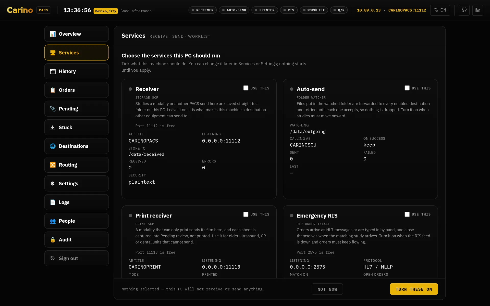
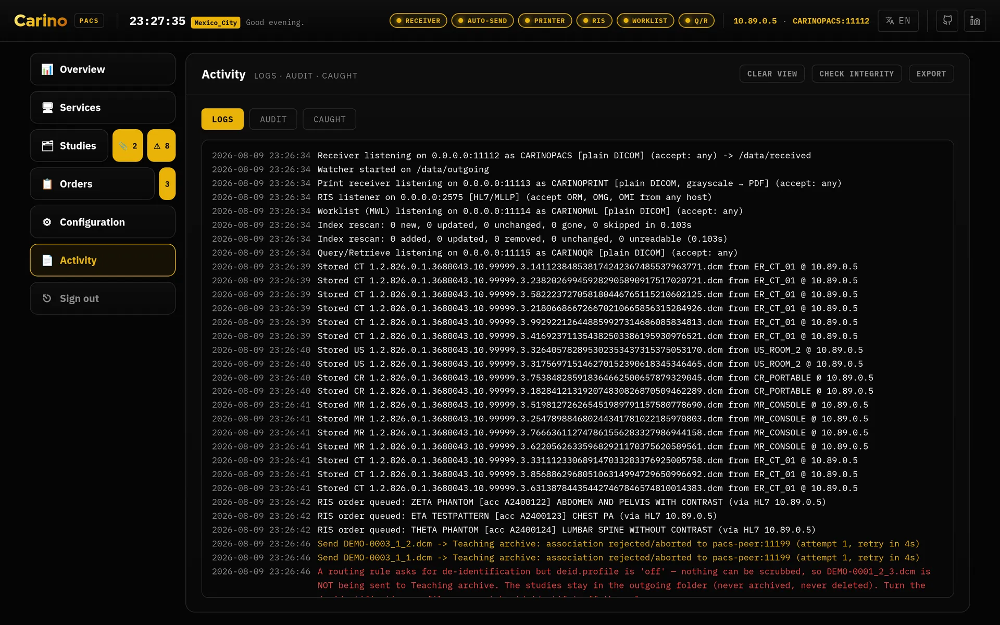
Headless
./run.sh init # scaffold config.json and its folders
./run.sh init --token # and generate web.auth_token
./run.sh serve # dashboard at http://127.0.0.1:8042
./run.sh receive # receiver only
./run.sh send # folder watch / forwarding only
./run.sh qr # Query/Retrieve only
./run.sh mwl # worklist only
./run.sh ris # HL7 order listener only
./run.sh print # virtual printer only
./run.sh echo --host 10.0.0.5 --port 104 --aet REMOTEPACSEvery command takes -c / --config <path>. On Windows, run.ps1.
3. The security model and the token rule
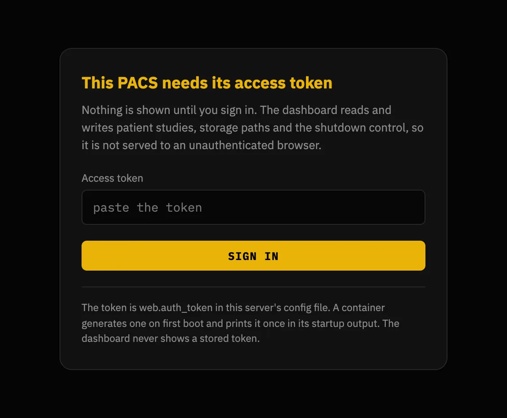
Start with the part that matters: the dashboard is the key to the archive. Anyone who opens it can read every stored study, download the DICOM files, change every setting, start and stop services, delete studies and shut the server down. Out of the box there is one shared secret and whoever holds it can do everything — profiles are optional and off until you turn them on. Once you do, each person signs in as themselves with their own permissions, their own view of patient identifiers, and their own name in the audit trail; the shared token keeps working as an administrator so nothing that already uses it breaks.

*** wherever it would have appeared.Permissions also decide what the dashboard draws. A profile sees only the sidebar rows, and only
the tabs inside them, that its capabilities pay for: a Radiologist who holds
routing.read but not config.read gets Configuration with
Destinations and Routing and no Settings tab, and Reception, holding
none of the three, has no Configuration row at all. The service chips in the top
header are the deliberate exception — see Web dashboard below.
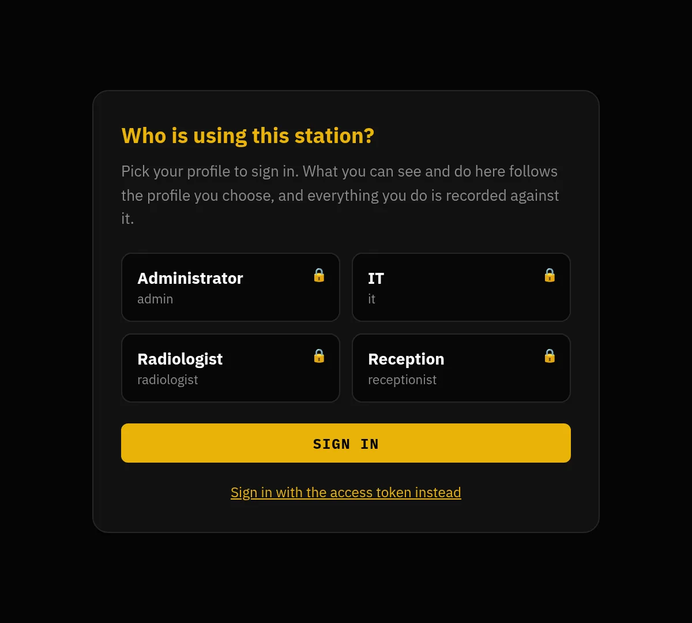
users.list_profiles is on — publishing the staff list to anyone who can reach the port is a real disclosure, and it is your call. The token still works, folded away underneath, because it is the way back in when somebody locks themselves out.The rule
An empty web.auth_token is allowed only while web.host is
loopback. If web.host is anything else — 0.0.0.0, a LAN address, a
hostname — and the token is empty, the server refuses to start. That refusal is
a feature, not an error to route around.
The reason is concrete. Unauthenticated on 127.0.0.1, the operating system is the
access control: only a process on this machine can reach the API. That is defensible. But
web.host is operator-configurable, and the moment somebody changes it to
0.0.0.0 so they can "get in from the other PC" — in a hurry, on a Tuesday, not
thinking about security — that same API hands any LAN neighbour the study list, the storage paths,
the DICOM bytes and /api/shutdown. The rule exists because that change takes ten
seconds and its consequences last years.
Every container is always in that situation: a container publishes on
0.0.0.0 by construction. So the image generates a 256-bit token on first boot when you
do not supply one — and prints it. What it never does is generate one quietly: a secret
nobody sees is a secret nobody rotates.
Generating and presenting the token
./run.sh init --token # writes it into config.json
python3 -c "import secrets; print(secrets.token_urlsafe(32))"
openssl rand -base64 32The server accepts the credential three ways:
Authorization: Bearer <token>X-Carino-Token: <token>- a session cookie issued by
POST /api/login
The cookie exists so the dashboard asks for the token once instead of holding it in JavaScript, where every XSS and every browser extension can read it. It never carries the token: it carries an HMAC over a secret generated at startup and kept in memory only. That is why a restart logs everyone out — the right trade for a single-operator appliance: no session store on disk, nothing to leak, and at worst the token is retyped once a shift.
The dashboard speaks plain HTTP. There is no built-in TLS for the web layer. If you expose it beyond loopback, put it behind a reverse proxy that terminates HTTPS. A token sent over cleartext HTTP on a shared network is a token you have given away.
The DICOM side
allowed_aets— an allow-list of calling AE titles. Empty means "accept anyone". It is a useful filter, not authentication: DICOM does not authenticate the caller.- DICOM-TLS — available on both sides, independently, including mutual TLS with
a client certificate. It uses the same port: a plaintext peer cannot talk to a TLS
receiver, and vice versa. TLS encrypts and authenticates the transport, not the
application — combine it with
allowed_aetsor client certificates for real access control. - Firewall — the DICOM listeners bind
0.0.0.0by default (though every listener is off until you enable it). That is right for something modalities must reach, and it means restricting them to the modality subnet is your job.
What the model does not protect
- Profiles are off until you turn them on. Until then there is one shared secret for the whole appliance and no accounts, no roles and no permissions. That is still the default, because switching it on silently during an upgrade would break every machine client on the site.
- No directory integration. Accounts live on the appliance. There is no LDAP, no Active Directory, no single sign-on, and no way to disable somebody centrally when they leave.
- The audit trail can be truncated. It catches a record edited in place, one removed from the middle, records reordered, and a file cut mid-line — each breaks a digest and Check integrity names the record and the reason. It cannot catch the last few records being deleted, because what remains is a genuinely valid chain, and it cannot stop a wholesale rewrite by somebody with write access to the audit folder. If you need non-repudiation, copy the chain head somewhere this machine cannot write and compare it later.
- No encryption at rest. Studies are ordinary DICOM files, the sqlite index
holds names and identifiers in the clear, orders are JSON, and
config.jsonholds the token in plaintext. Encrypt the volume underneath (LUKS, BitLocker, FileVault) and restrict the data directory's permissions. - The HL7/MLLP listener has no TLS and no credential. It is a TCP socket with
MLLP framing. Its only control is
allowed_hosts, a peer-address check and therefore spoofable. Anyone who can open a connection to that port can inject orders that appear on the worklist. Bind it to a trusted clinical segment and firewall it. - De-identification does not touch pixels. See that service below: burned-in demographics survive every profile.
Backups. The sqlite index is a cache and rebuilds itself; the images do not. Back up the storage directories — and test a restore at least once.
No telemetry. Carino DICOM sends nothing anywhere: no analytics, no crash reporting, no update checks, no third-party scripts fetched at runtime. The only outbound connections are the DICOM associations and HL7 acknowledgements you configured, to the peers you named. A change that broke that would be treated as a vulnerability.
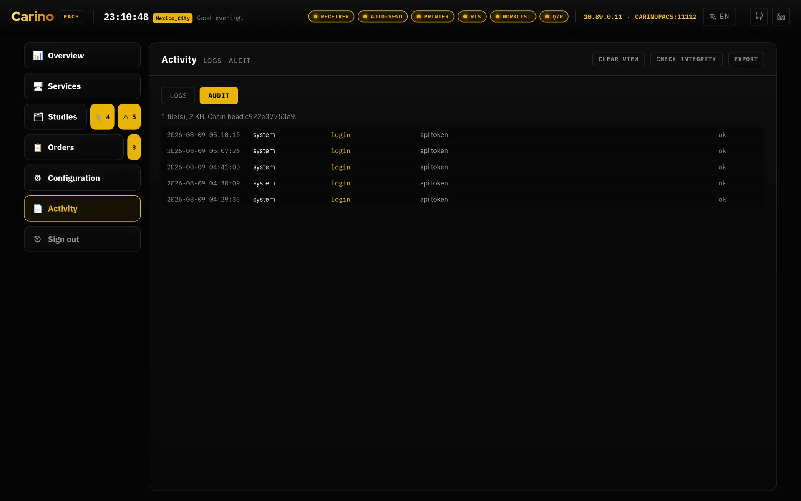
4. The services, one by one
Everything that opens a port ships off. The right question is not "what can it do?" but "what does this machine need to do?" Every enabled service is one more open port. The index below is the one exception — it starts on its own, because it is a local sqlite cache that binds nothing.
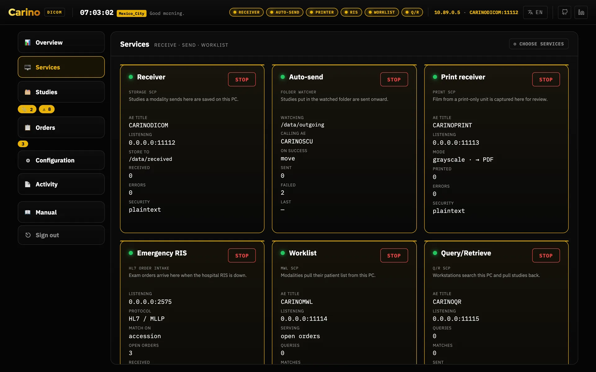
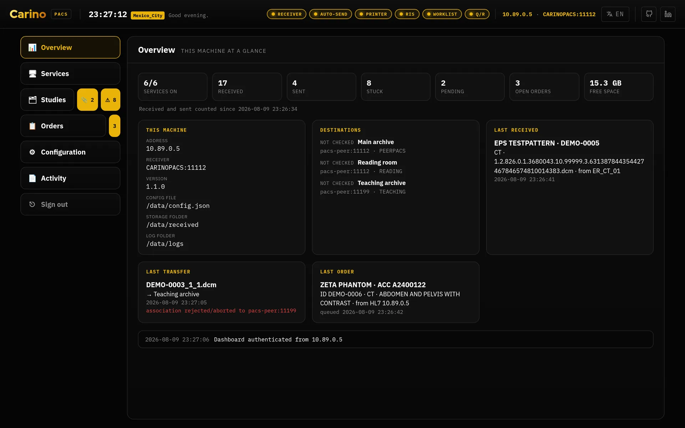
Receiver — Storage SCP
Port 11112 · C-STORE, C-ECHO
- What it does
- Accepts studies pushed by modalities and files them to disk, optionally organised by Patient / Study / Series. It accepts all transfer syntaxes and stores compressed objects as-is — no transcoding, so nothing is altered on the way in.
- Turn it on when
- Anything needs to send images here: modalities, another PACS, a workstation. This is the central service.
- Leave it off when
- This machine only forwards what something else drops in a folder.
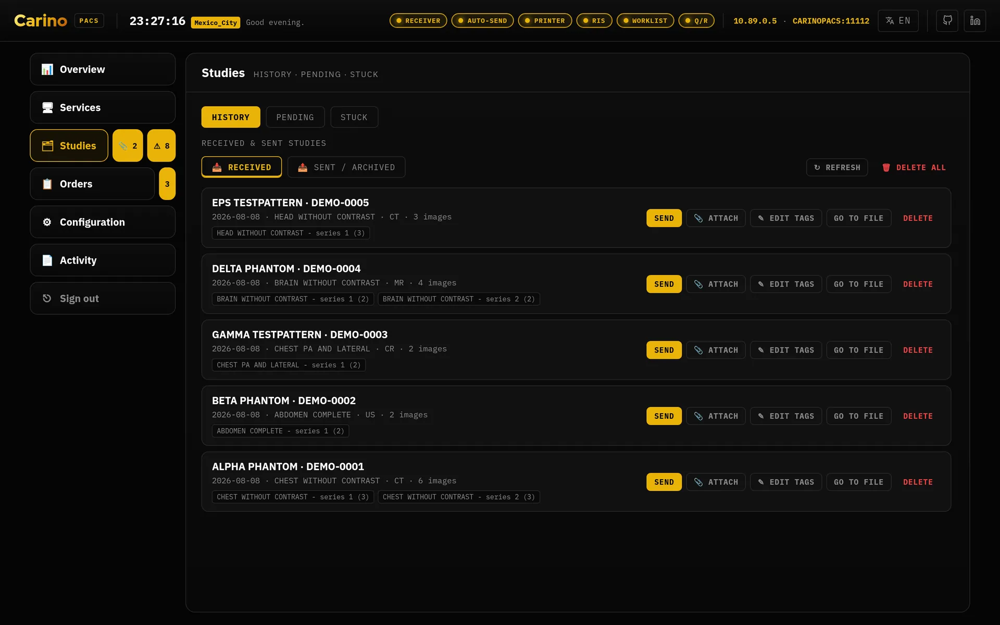
Auto-send — Storage SCU and routing rules
Outbound client · C-STORE
- What it does
- Watches a folder and forwards every new file to whichever destinations apply. A file is only sent once it is stable (size unchanged between two scans), so a half-written file is never forwarded. Progress is tracked per destination: a file counts as done only when every enabled destination has accepted it, and failed hosts are retried on the next scan. On success the original can be kept, moved or deleted.
- Rules
- With routing enabled, a rule picks destinations by modality, calling AE title, station,
patient ID or study description (case-insensitive
*and?globs). Example: CT fromER_*to the teaching archive, de-identified. - The guarantee
- A study can never end up going nowhere. Routing off, no rule matched, an unreadable header, a rule naming a destination that no longer exists — every one of those falls back to every enabled destination. Over-sending annoys an operator; under-sending loses an image.
- The one exception
- A rule that asks to de-identify for a destination, where the scrub cannot actually be
performed, holds that destination: it is not sent to at all, rather than
sent identified. Two things stop the scrub — the profile is
off, or the profile is on and no de-identifier can be built from the settings — and they need different fixes. Nothing is lost either way; see De-identify on forward below. - Turn it on when
- This machine has to deliver images onward: to the central PACS, to a reading workstation, or as copies to a teaching archive.
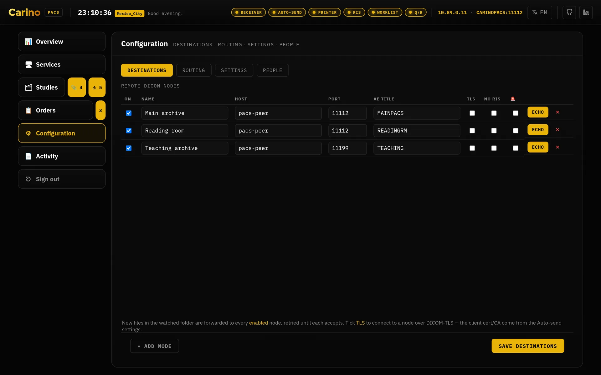
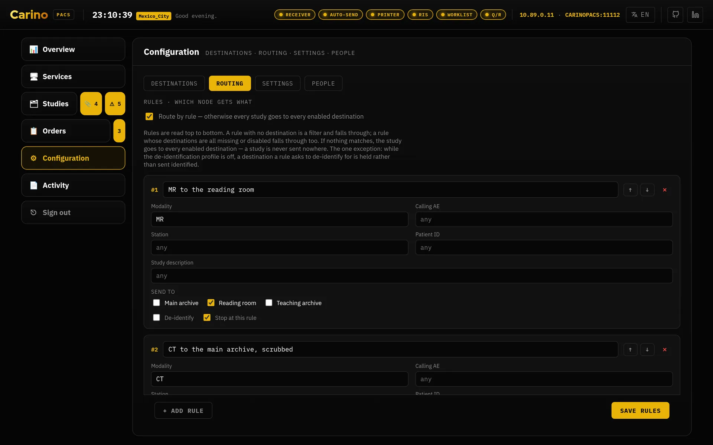
![The Stuck tab of Studies, under a banner reading “5 files need attention” and split in two: “Retrying automatically”, listing the teaching archive with two instances waiting, its last error in red, a Retry now button and a countdown to the next attempt; and “Held — nothing is being sent”, listing the main archive tagged profile off, with three instances waiting, the three .dcm files named, a paragraph giving the edit that releases them and two buttons, De-identification settings and The rule that asks for it.](img/en/stuck.webp)
De-identify on forward
PS3.15 Annex E profile · applied only to the copy that leaves
- What it does
- Applies the Basic Application Level Confidentiality Profile to the object being
sent, declaring in
(0012,0064)exactly which retain options were used so the recipient can see what was kept. The archived original is never rewritten — that asymmetry is the whole idea. - Profiles
basicretains dates (full or shifted), patient characteristics, device identity and institution identity.strictdrops device and institution identity and removes private attributes even if you asked to keep them.- Turn it on when
- Images leave the clinical environment: teaching, research, a vendor, an outside second opinion.
- Turning it off
- The profile decides whether scrubbing happens at all; a rule's de-identify tick
decides which destinations get a scrubbed copy. Set the profile to
offwhile a rule still asks for it and Carino holds that destination rather than sending an identified copy to a node whose owner was told it receives none.
Held, not sent — and this is the answer when studies stop moving. A destination a rule marks de-identify receives nothing whenever the scrub cannot actually be performed. Delivery is deferred, identity is not disclosed: a study waiting on disk is released by an edit, a name that has arrived at an outside node is not recoverable by any edit.
There are two reasons the scrub cannot happen, and they are not fixed the same way. Every hold records which one it is, and the Stuck tab of Studies prints the remedy for the cause it recorded rather than guessing:
- The profile is
offwhile a rule still asks for a scrub. Set the profile tobasicorstrictand the next auto-send pass releases them. - The profile is on, but no de-identifier could be built from the current settings, so there is still nothing to scrub with. The failure that stopped it is on the Logs tab of Activity, on the send channel — fix that. Turning the profile off does not release this one: it releases nothing and only moves which half is stopping the scrub.
Unticking de-identify on the rule releases either hold, and it releases the studies identified — which is the exact outcome the hold exists to prevent. Make that edit only if that destination is genuinely no longer meant to receive scrubbed data.
Whichever of these edits is the right one, it is a click from the row that reports the hold. Each held row carries a De-identification settings button that opens the Settings tab of Configuration, and a The rule that asks for it button that opens the Routing tab. Both open the tab and nothing more: neither scrolls down to the rule that asks for the scrub, and neither highlights it. Even so, the row that names the problem is the way to both places it is fixed, so this repair is shorter than it was when each of them was a sidebar row to find.
Nothing is lost and nothing is quiet about it. The studies stay in the outgoing folder — never archived, never deleted — every other destination on the same study still receives them, the Logs tab of Activity raises an error naming the study, the withheld destination and the cause, the de-identification fieldset on the Settings tab names it too, and the ⚠ badge beside Studies counts those files — and that badge is itself a button, which opens the Stuck tab. Nothing releases a hold on its own: no timer runs it down and nothing retries it.
It does not clean pixels. Patient demographics burned into the image — the banner an ultrasound or a secondary capture prints inside the frame — survive every profile, and they are the most common way "anonymised" data walks out of a hospital with a name on it. The Clean Pixel Data option (113101) is deliberately not claimed, because it is not done. Nothing inside the program can detect that leak for you: a human has to look at the images. Narrative text inside Structured Reports is likewise not read.
Index
sqlite · index.db
- What it does
- Keeps one row per stored file and derives patient, study and series answers from it, so a study summary can never drift out of step with the instances it summarises. It is the query layer behind Query/Retrieve and DICOMweb.
- Turn it on when
- You use Query/Retrieve or DICOMweb. It is the only dependency of both.
- What it guarantees
- The index is a cache, never the source of truth. Losing it costs a rescan, never an image.
Query/Retrieve — C-FIND, C-MOVE, C-GET
Port 11115 · Patient Root and Study Root
- What it does
- Lets another system ask "what studies do you have for this patient?" and then "send them to me / to that workstation". This is the half of a PACS that old equipment can actually talk to: a 2009 ultrasound or a CR reader will never speak DICOMweb, but it does speak DIMSE.
- Turn it on when
- Workstations or modalities need to pull studies from here, or you are acting as the temporary archive during a primary-PACS outage.
- What it guarantees
- A C-MOVE never invents its instance list — it resolves through the index. Anything the index knows about but cannot be read off disk is counted as a failed sub-operation and named in the Failed SOP Instance UID List. It is never quietly dropped: a C-MOVE that reports success while sending fewer images than it matched is the worst failure this software can have.
DICOMweb — QIDO-RS, WADO-RS, STOW-RS
HTTP, under /dicom-web on the dashboard port
- What it does
- Lets modern viewers (OHIF, Weasis and friends) query, retrieve and store over HTTP without negotiating a DICOM association. A STOW-RS upload goes through the same filing a C-STORE uses, so a study posted by a viewer is indistinguishable from one pushed by a modality.
- Turn it on when
- You want a web viewer against the archive. Remember the token protects these routes too.
- CORS
cors_originsis matched exactly (scheme + host + port) and is empty by default, so nothing is reflected back to an origin that is not on the list. There is no pattern syntax — but a literal*is honoured, and only because you typed it: from then on every origin is reflected and any page the operator visits could read the archive off this machine. Name the viewer instead.- What it does not do
/rendered,/thumbnail, bulkdata URIs and transcoding between transfer syntaxes are not implemented and answer406. A half-working viewer is worse than an absent feature: anything that cannot be produced is never faked.
Modality Worklist (MWL)
Port 11114 · worklist C-FIND
- What it does
- Serves orders to modalities so the technologist does not hand-key patient details. Each order carries a pre-generated Study Instance UID that is burned into the exam, so the study the modality sends back reconciles to its order exactly. An order's target modality AE steers it to one station; blank means every station sees it.
- Turn it on when
- The RIS is not reaching the modalities: because it is down, because the destination simply has no RIS, or to test a RIS→PACS flow without a live RIS.
Emergency RIS — HL7 orders
Port 2575 · HL7 ORM^O01 over MLLP
- What it does
- Receives HL7 orders over MLLP, and also lets you hand-key them into the dashboard when nothing upstream is alive. When the study comes back by C-STORE it is matched to its order by accession number (patient ID as a fallback), and the order is closed and archived for the trail — never erased.
- Turn it on when
- The RIS is down, or you are testing an integration.
- What it guarantees
- Image delivery is never gated on an order match. A study with no matching order is still stored and forwarded; the order simply stays open for manual reconciliation.
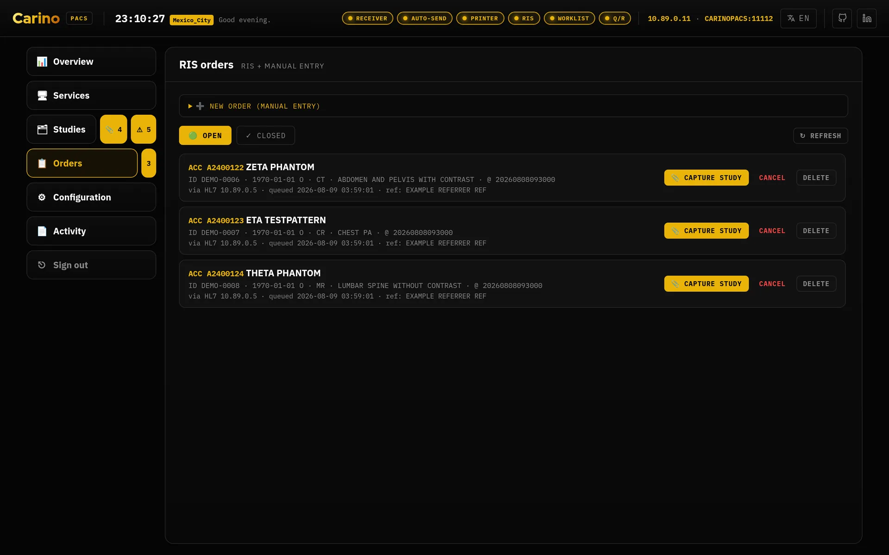
No TLS, no credential. See the security section: anyone who can open a socket to that port can inject orders. Trusted clinical network and a firewall, or not at all.
Emergency failover
C-ECHO monitoring of the destination marked primary
- What it does
- Mark a destination as primary and arm the monitor: Carino C-ECHOes it periodically and watches forward failures. If it stays unreachable past the threshold you get the prompt to activate the emergency RIS. Activating starts the local worklist so technologists keep scanning, holds every study received during the outage, and forwards it once the primary is back. You decide when to stand down.
- Turn it on when
- This machine is the gateway to a PACS you depend on. It is why the word "continuity" is in the first line of this manual.
Virtual print
Port 11113 · DICOM Print, PDF output
- What it does
- Presents itself as a DICOM printer and captures whatever is sent to it as PDF. For equipment whose only output is film, this is how you keep something filable.
- Turn it on when
- You have a print-only modality whose output you want to rescue.
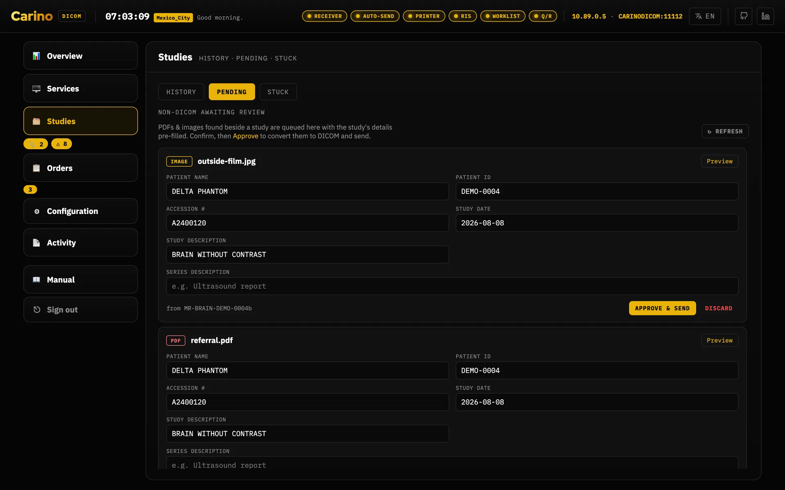
Web dashboard
Port 8042 · HTTP, 127.0.0.1 by default
- What it does
- Per-service status, destinations, orders, a live activity log, settings and a bundled DICOM editor. Everything the dashboard does also exists in the CLI.
- Getting around
- The sidebar has six rows: Overview, Services, Studies,
Orders, Configuration and Activity. The three questions asked of the
same pile of files are the tabs of Studies — History, Pending and
Stuck; what you set when commissioning the machine are the tabs of
Configuration — Destinations, Routing, Settings and
People, and it opens on Destinations, not on Settings; and the two
records are the tabs of Activity — Logs and Audit. Orders
keeps its own strip of open and closed. The Studies row carries two counts that are
buttons in their own right, 📎 pending and ⚠ stuck, and each opens its own tab: so reaching
Stuck is one click while something is stuck, and two — the row, then the tab — when
nothing is, because a count of zero hides itself. A counter that permanently reads 0 is an
alarm that is always on, and nobody looks at those. Orders carries its own count on the
same terms. Every panel and tab has its own address —
#studies/stuck,#configuration/routing,#activity/logs— so a place in the dashboard can be bookmarked, read out over a phone during an outage, and left with the browser's Back button; older#dlgStuck-style links still resolve. Overview is the one exception: it answers to#overviewif you type it, but it is never written to the address bar and leaves no history entry, because it prints a patient's name and an unattended screen must not come back to it after a reload. - The chips in the header
- The service chips along the top are unchanged for anyone who may start and stop services.
A profile without
services.controlstill sees them, as indicators, but they are disabled: service state is not privileged — the front desk has to be able to see that the receiver is dead — and a switch the server would refuse is not worth offering. - Move it off loopback when
- Only with a concrete reason — and then with a token (mandatory) and HTTPS in front. See the token rule.

config.json, in a form. The file stays the source of truth — an edit here writes it, and a config the dashboard would refuse to save is refused with the reason, not silently rewritten.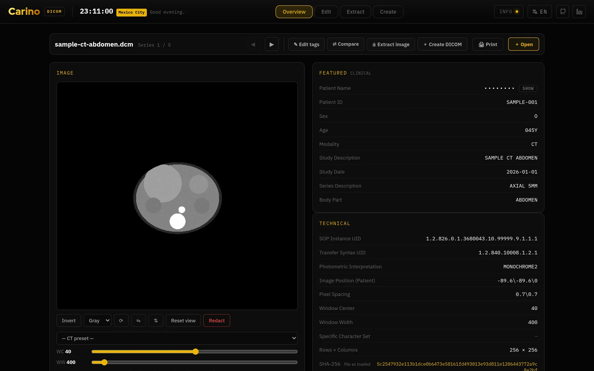
![The editor's Edit tab: a toolbar with Anonymize all, Randomize all, add Tag, JSON, CSV, Print and Download all; a strip of the five loaded series; filter chips for patient, study, series, image, equipment, UIDs and private tags; the tag table itself, one row per attribute with its group and element numbers, description, VR and an editable value; and down the right-hand third an Image edits panel — rotate, flip, invert and redact burned-in text, written into the stored pixels — above the frame preview, a folded Window/Level reading and the drop zone.](img/en/editor-tags.webp)
5. This is not a medical device
Carino DICOM is not a medical device. It is not certified, cleared or registered with any regulator, in any country. It carries no CE marking as a medical device, no FDA clearance, and no registration with ANVISA, COFEPRIS or any equivalent body. Nobody has run a clinical-use validation against it.
It is not for primary diagnosis. There is no diagnostic viewer here: no windowing, no measurements, no calibrated rendering chain, no control over the display it appears on. Read studies on the validated workstation you already have.
Stated plainly, because that is more useful than a footnote:
- If you deploy it, the validation is yours. Regulatory compliance, risk assessment, data protection and clinical responsibility sit with the organisation that puts it into production, not with the project.
- It is distributed with no warranty of any kind, as its AGPL-3.0 licence says.
- It does not replace your PACS or your RIS. It is the gateway between them, and the thing that keeps a department working through an outage until they come back.
- Treat it as clinical infrastructure anyway. Not being a medical device does not make it harmless: it moves patient data. Volume encryption, firewalling, TLS, a token and backups are not optional.
- If a patient's care depends on it, the responsibility for that is yours, not this software's.
None of this is pessimism. The project takes seriously that an image that silently never arrives is worse than a crash — which is why it would rather refuse to start, count failed sub-operations explicitly, and over-send than under-send. It withholds a delivery in exactly one case, loudly and reversibly: a destination a rule asks to de-identify for, while the scrub that was promised cannot be performed — because the profile is off, or because the profile is on and no de-identifier could be built. It says which of the two, because the two are fixed differently. But software can only answer for what it does; the rest is yours.
6. Licence and where to get help
Carino DICOM is released under AGPL-3.0-or-later. Because it is a network server,
§13 applies: if you run a modified version as a service, you must offer its source to the people
who use it. Keep the LICENSE file and a pointer to the source with any modified
deployment.
- Source and issue tracker on GitHub
- Security policy — what is protected, what is not, and how to report a vulnerability
- How to contribute
Found an error in this manual — or a translation a radiologist would never say? Open an issue. The Spanish and Portuguese documentation is part of the project, not an extra.
Carino DICOM · landing page · part of the carino.systems workshop · AGPL-3.0-or-later.